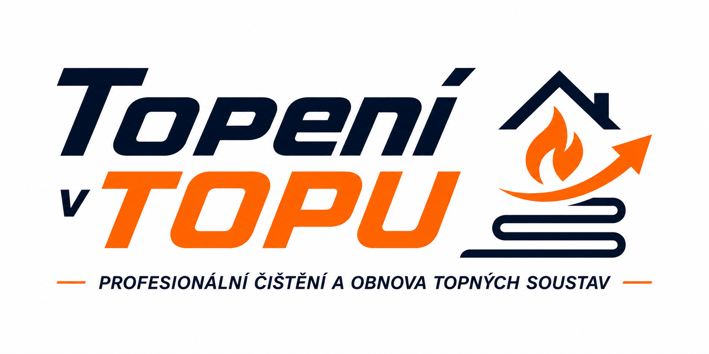

Ochrana investice
Pomáháme vytvářet vhodné podmínky pro dlouhodobě spolehlivý provoz moderních zdrojů tepla.

+420 732 891 385Topení v TOPU
Chráníme investice do vytápění pomocí pulzního proplachu, úpravy topné vody a systému práce TOP Standard.

Specializovaná péče o teplovodní topné systémy v rodinných a bytových domech.
Proč to řešit
Teplovodní topný systém není jen potrubí a radiátory. Je to prostředí, ve kterém pracuje kotel, tepelné čerpadlo nebo jiný zdroj tepla. Stav vody a nečistoty v systému mohou ovlivnit provoz, účinnost i životnost zařízení.
Pomáháme vytvářet vhodné podmínky pro dlouhodobě spolehlivý provoz moderních zdrojů tepla.
Čistý a správně ošetřený systém umožňuje lepší přenos tepla a může přispět ke snížení spotřeby energie.
Moderní zdroje tepla mají požadavky na kvalitu topné vody. Jejich splnění může být důležité i pro záruční podmínky výrobce.
Situace 01
Připravíme topný systém před montáží nového zdroje tepla. Pulzní proplach a následná péče pomáhají chránit zařízení, do kterého jste právě investovali.
Doporučený program: TOP OchranaSituace 02
Studené radiátory, hlučnost, usazeniny nebo nerovnoměrné vytápění mohou souviset se stavem systému. TOP Proplach řeší konkrétní problém a obnovu průtoku.
Doporučený program: TOP ProplachProgramy péče
Rozdíl mezi programy je pouze v rozsahu péče, ne v kvalitě provedení, přístupu k zákazníkovi nebo úrovni protokolu.
Pro zákazníky, kteří chtějí vyřešit konkrétní problém svého teplovodního topného systému.
Pro zákazníky, kteří chtějí po proplachu zajistit dlouhodobou ochranu topného systému.
TOP Standard
TOP Standard je systém řízení kvality služeb společnosti Topení v TOPU. Každá zakázka má jasný průběh, stejnou úroveň péče a měřitelný výstup.
Pro partnery
Spolupracujeme s montážními firmami tepelných čerpadel, topenáři, instalatéry, developery a správci objektů. Vaši zákazníci získají odbornou péči o topný systém bez toho, abyste museli budovat vlastní zázemí pro pulzní proplach a úpravu topné vody.
Navázat spolupráciReference
Každá budoucí reference bude obsahovat popis zakázky, fotografie, výsledky měření a část protokolu. Až bude co ukázat, ukážeme to pořádně. Revoluční koncept: důkazy místo marketingové mlhy.

FAQ
Ano. Proplach topení před instalací tepelného čerpadla pomáhá připravit systém na provoz moderního zdroje tepla a snížit riziko zanášení výměníků, filtrů a dalších částí systému.
Správné parametry topné vody jsou důležité pro omezení koroze, tvorby usazenin a dlouhodobě spolehlivý provoz systému. U moderních zdrojů tepla mohou souviset také s požadavky výrobce.
Čistý a správně ošetřený systém umožňuje efektivnější přenos tepla. To může přispět k hospodárnějšímu provozu vytápění a snížení spotřeby energie.
Kontakt
Napište nebo zavolejte. Stručně popište topný systém, zdroj tepla a problém nebo plánovanou montáž.